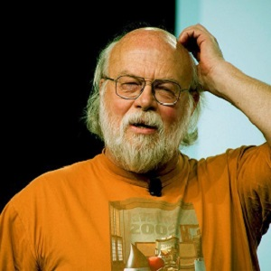

JavaScript

разработан в 1996 году, автор - американский программист Брендан Айк.
разработан в 1996 году, автор - американский программист Брендан Айк.
разработан в 1990–1996 годах канадским программистом Джеймсом Гослингом.

разработан в 1969–1973 годах сотрудником Bell Labs Деннисом Ритчи.
разработан в 1993-1995 годах, автор - японский программист Юкихиро Мацумото.


создан в 1989–1991 годах голландским программистом Гвидо ван Россумом.

разработан в 1972 году, автор - французский программист Ален Колмероэ.